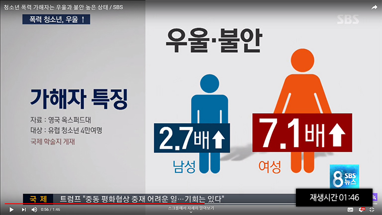

-
 1회기
1회기
왜 우리 아이에게
이런 일이 생겼을까요? -
 2회기
2회기
학교폭력
대응방법 알기 -
 3회기
3회기
예방과 재발
방지하기 -
 4회기
4회기
부모는 무엇을 해야 할까요?
- 시작하기
- 첫째,
학교폭력 실태 - 둘째,
청소년 발달특성과
학교폭력 - 셋째,
피해를 말하지 못하는
아이의 속마음 - 넷째,
내가 보였던
반응 되감기 - 정리하기
가해자의 분노
 모바일 상담 이용시 3G, 4G 환경에서 데이터 통화료가 발생할 수 있습니다.
모바일 상담 이용시 3G, 4G 환경에서 데이터 통화료가 발생할 수 있습니다.

참고영상 바로보기 [ SBS뉴스, 2017.9.8. ] https://www.youtube.com/watch?v=L1b-HQyW3QI 학교폭력 가해자들의 가혹한 행동 속에는 어떤 심리상태가 숨어있을까요? 죄책감도 느끼지 않고, 피해학생이 얼마나 큰 고통에 시달리는지 인지하지 못합니다.
학교폭력 가해자들의 가혹한 행동 속에는 어떤 심리상태가 숨어있을까요? 죄책감도 느끼지 않고, 피해학생이 얼마나 큰 고통에 시달리는지 인지하지 못합니다.
 내적으로는 심한 열등감을 느끼지만 겉으로는 우월한 듯 보이려다 보니 폭력과 같은 과도한 행동을 표출하게 됩니다. 어렸을 때 가족이나 친구에게 폭행당하고 무시당했던 것이 쌓여 있다가 청소년기에 공격적으로 나타나는 것으로 보입니다.
내적으로는 심한 열등감을 느끼지만 겉으로는 우월한 듯 보이려다 보니 폭력과 같은 과도한 행동을 표출하게 됩니다. 어렸을 때 가족이나 친구에게 폭행당하고 무시당했던 것이 쌓여 있다가 청소년기에 공격적으로 나타나는 것으로 보입니다.